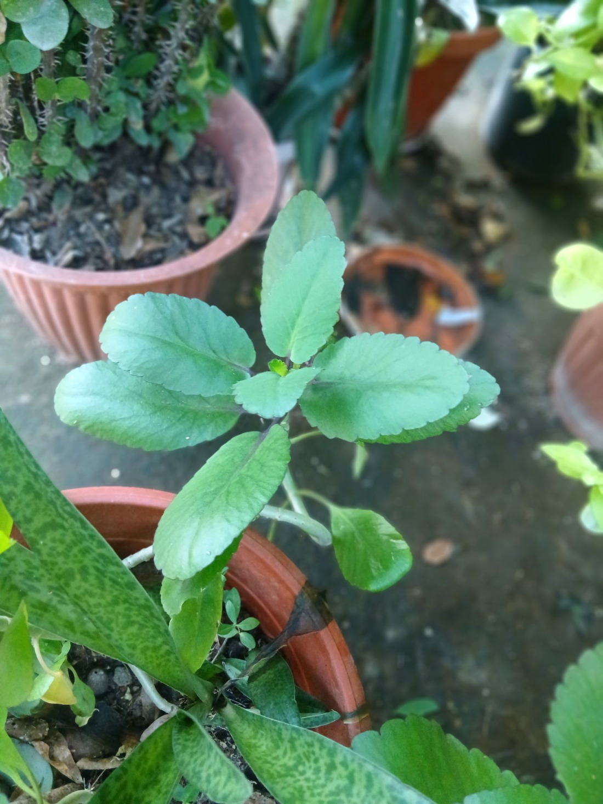

The Life Plant growing in a pot – simple to keep and very useful.
The Life Plant (Kalanchoe pinnata), also called Wonder of the World, is a beloved medicinal plant across the Caribbean. With thick, water-storing leaves and easy growth, it’s a perfect home remedy plant and a great choice for beginners.
Benefits & Traditional Uses
Different households and communities use this plant in different ways, but some common uses include:
- Steeped as a warm tea for coughs and colds.
- Fresh leaves applied to the skin to help soothe minor irritations.
- Used in home tonics and herbal mixes when prepared properly.
As with any herbal remedy, it’s always wise to use it carefully and get advice if you have health conditions or are taking medication.
How I Grow the Life Plant
One of the reasons I like this plant is because it’s very forgiving and multiplies easily.
- Light: It likes bright light, and can handle some direct sun once established.
- Water: Water when the soil is dry on top. The thick leaves store water, so it doesn’t like being overwatered.
- Soil: A well-draining mix works best. Avoid heavy, waterlogged soil.
- Containers: It grows well in recycled containers, buckets, or regular pots.

Why I Like Having It at Home
The Life Plant is one of those “quiet” plants that just sit there and grow, but when you need it, you’re glad it’s around. Between its traditional uses and its toughness as a plant, it’s a good choice for anyone who wants to start a small home herb corner.